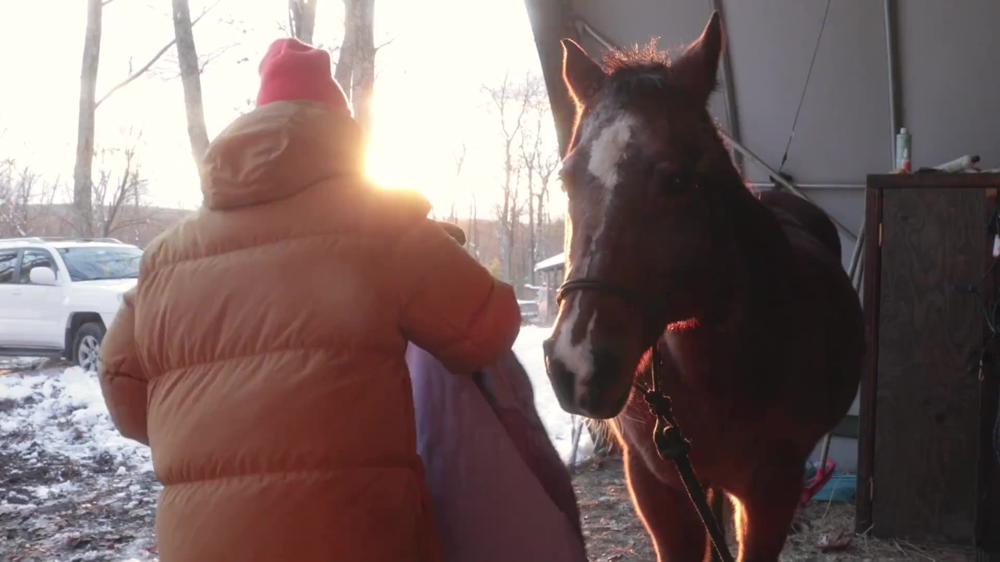
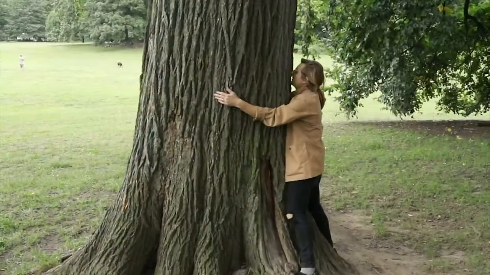
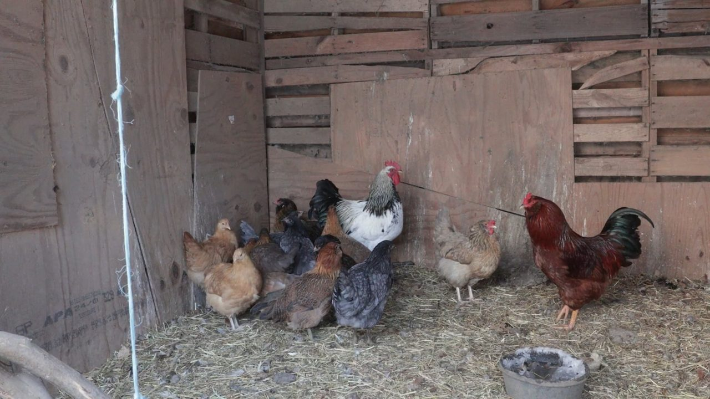
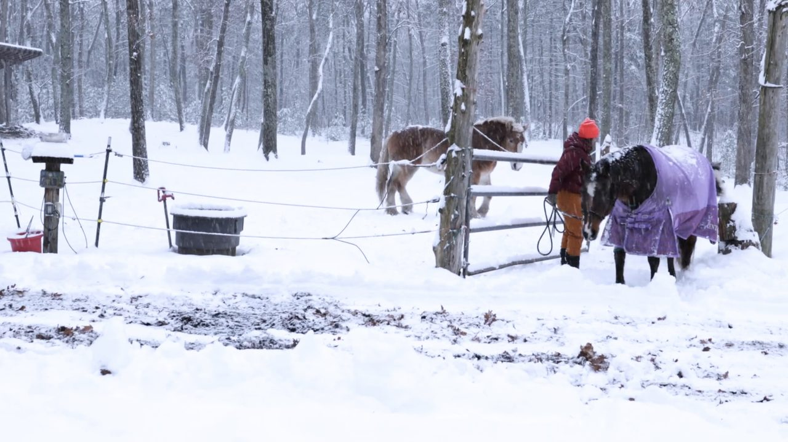

End-of-life doula · DC · Virginia · Florida · North Carolina
Everything is already all right.
Warm, steady, human company for the end of a life, and for the people who love them. I'm Jason, and I'd be glad to walk with you.
First things first
Wait... a death doula?
You've probably heard of birth doulas. They help bring a new life into the world with a lot of care and a steady hand.
A death doula, also called an end-of-life doula, does the same thing at the other end of life. I'm not a doctor or a nurse. I'm the person who sits with you, listens, helps you plan, and makes sure you and your family aren't figuring this out alone.
Part guide, part planner, part calm person in the room.

How I help
What I actually do
Talk
About the big stuff, the small stuff, and the stuff nobody else wants to bring up.
Plan
Your wishes, written down and in the right hands, so your people aren't left guessing.
Set the room
Music, light, who's there and how it feels. The vigil, done your way.
Give your people a break
So the ones who love you can sleep, eat and just be family for a while.
Stay
Through the last days and the hours after. No rushing, no clock watching.
Walk with the family after
Grief doesn't keep a schedule, so I don't disappear when the service ends.
And yes, I'm also certified to help families say goodbye to a beloved pet.
Ways to work together
Start small, or go all in.
Every family is different, so there's no package you have to squeeze into. Here's where people usually begin.
Planning conversations
One or a few unhurried sessions at your kitchen table or online. We talk through what matters and get your wishes on paper.
Vigil support
Planning the room and keeping company in the last days, so your family can rest and be present.
Legacy projects and films
Letters, recorded stories and short films that let a life be told in a person's own words.
Family and grief support
The hours after a death, the practical next steps, and someone to check in in the weeks that follow.
One more thing
Your story, on film.
Before this work I spent years behind a camera, in film, documentary and live events. Now I make legacy films, short portraits of a life told in a person's own voice, for the people who will want to hear that voice again.
We sit down together, I ask good questions, and you tell it your way. The laughs, the hard parts, the stuff nobody's heard before. It's yours to keep and share however you like.



Fair questions
Questions people ask me
Isn't that what hospice does?
Hospice is wonderful and takes care of the medical side. I work alongside them on the emotional and practical side, and I can spend the kind of long, unhurried time with you that a care team often can't.
Do I have to be sick to call you?
Not at all. Some of the best planning happens years ahead, over coffee, with no rush at all.
Isn't it all really sad?
There are tears, sure. There's also a surprising amount of laughter, great stories and the occasional debate about the playlist.
Do I need to be religious?
Nope. I meet you where you are, whatever you believe or don't.
Who is this for?
The person nearing the end, the family around them, and anyone who just wants to be ready.
Is what I tell you private?
Yes. What you share with me stays with me. I don't share your story, your photos or your film with anyone without your written okay.
Does insurance cover this?
Not usually. Doula care is typically paid for privately. We'll talk openly about cost up front, and there's no pressure on the first call.
Take something home
A little reading, no pressure
Let's talk about the part nobody talks about
A friendly fold-out guide for anyone who's never heard the words "death doula." Great for sharing with family.
Download the guideLeaving Well
A guided workbook for planning with a lot more heart and a lot less paperwork. Your wishes, your people, your playlist and your stories, all in one place.
Ask me about it
Who you'd be talking to
Hi, I'm Jason.
I'm not here to fix anything. I'm here to show up, sit with you, and help make the hardest part of life a little more human.
Let's talk about the part nobody talks about.
A first conversation is easy. No pressure and no script.